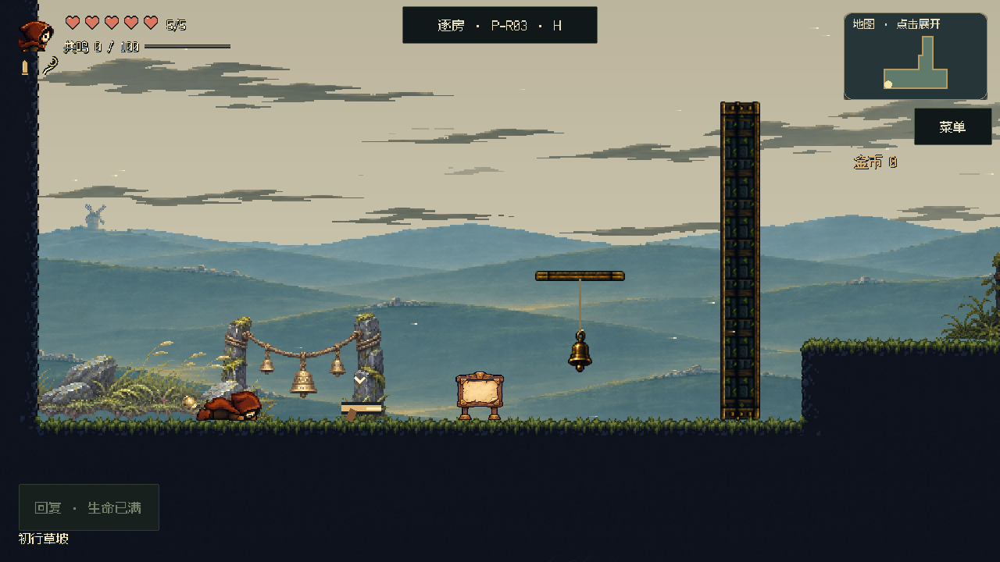
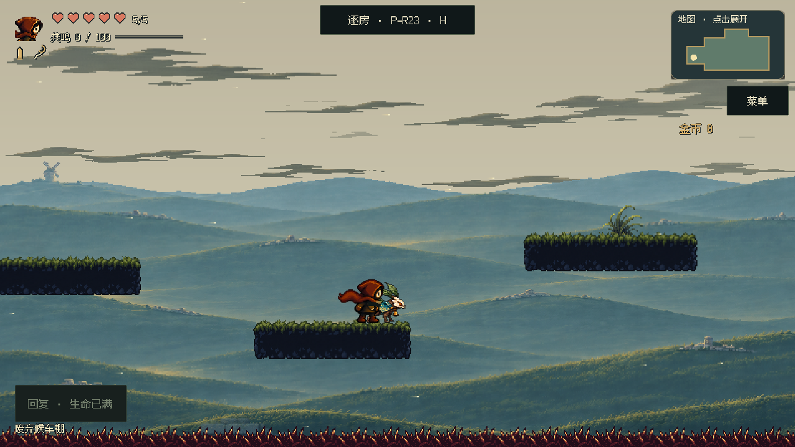
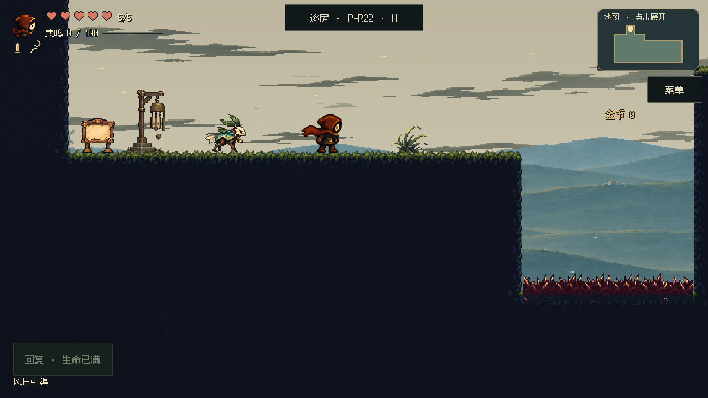
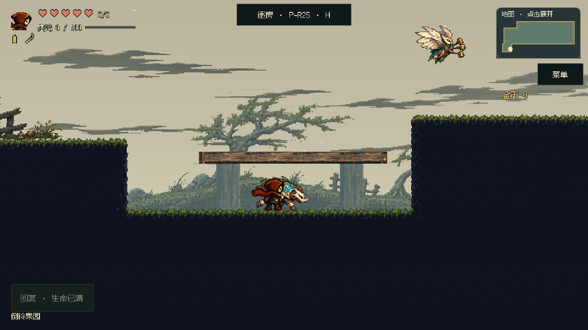
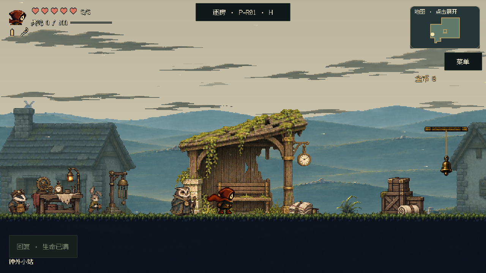
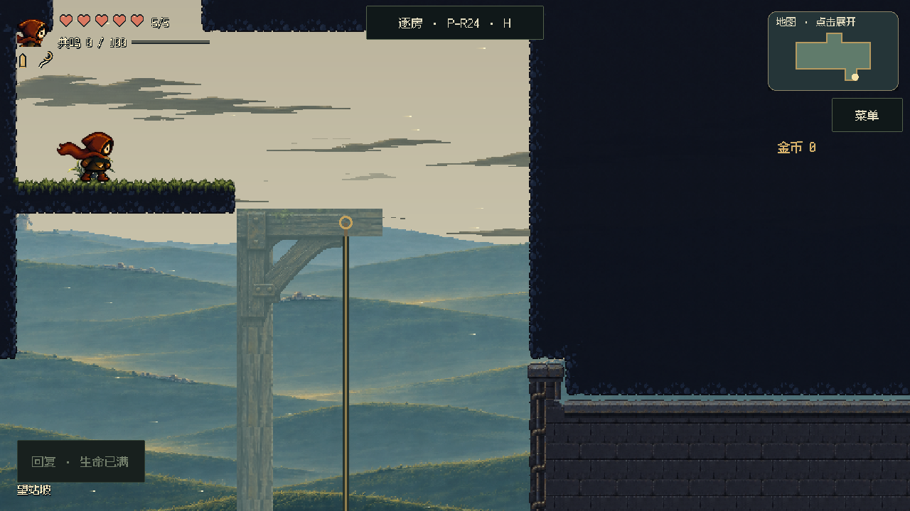

失序之钟 · 3e52f9d68ce6
平台不必逐块加柱
自然短台保持清楚轮廓；建筑、桥梁和机械才保留必要支撑。无碰撞柱梁降低反差，退到角色、危险和落点后方。
同玩家位置、正式镜头对照；只改装饰与背景调色。地形碰撞、平台位置、怪物、机关和奖励不变。关卡审核平台未部署。
P03 · 初行草坡
删除额外粗木门架，真实铃门和开门流程保留。

正常速度短片 · 7.4秒 · 1.15MiB
下载短片
P23 · 废弃候车棚
删除逐台石柱和上层木撑，保留反冲落点与危险。

正常速度短片 · 5.0秒 · 1.08MiB
下载短片
P22 · 风压引渠
删除三根长石柱，出口机关的小木架退入背景。

P25 · 倒铃果园
删除高处长木架，保留短桥柱并降低反差，梁底接缝不变。

正常速度短片 · 5.3秒 · 1.05MiB
下载短片
P01 · 钟外小站
升降架和房屋作为后景，活动平台、地形与NPC保持前层可读。

P24 · 望站坡
保留室内建筑结构，升降框架降低反差。

截图冻结敌人位置；短片使用局部起点并隔离普通战斗，保留真实控制器、射铃和反冲。用于检查支撑可读性，不代表全区平衡或实体手机性能验收。
美术技能已修正“每台都要解释承重”的误用：先判断是否需要，再检查保留构件的接缝和景深。
下载当前项目美术技能